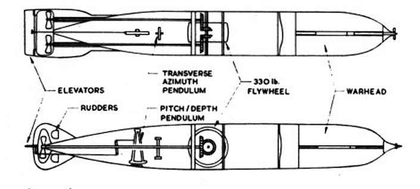
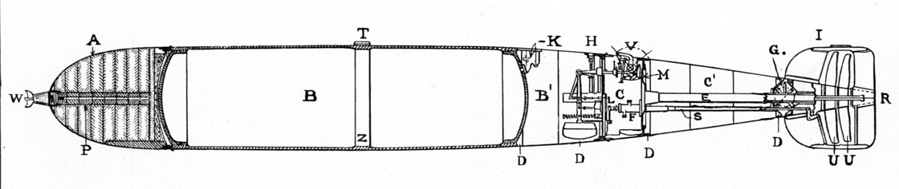

"The Whitehead Torpedo"
Reconstructing the first torpedo
The word torpedo comes from the Latin word “torpere” which means stiff or numb. It is a self-propelled explosive either launched from underwater or air and is designed to detonate on contact or in proximity of a target.
The first self-propelled torpedo known as the Whitehead torpedo was made by a British engineer Robert Whitehead in 1866. It had four main parts: head, air flask, after body and a tail. The head carried the explosive while the air flask contained compressed air. The after body had the controlling mechanism and engine and the propeller and rudder were part of the tail. The US Navy started using it in 1892. Ariel torpedoes and submarine torpedoes were widely used in both the World Wars.
Objective
Use graphics (photographs, blueprints), video, and animation to demonstrate the different parts and mechanisms of a torpedo. Audio will provide narration as well as background music. A 3D model of a Whitehead torpedo will be built illustrating its various parts. A trip to the National Museum of the US Navy is planned to photograph the whitehead torpedo.
Audience
The anticipated audience of this piece would be high school and undergraduate students interested in explosives and the study of weapons.
Naval History Museum
https://www.history.navy.mil/museums/keyport/html/part2.htm
Whitehead torpedo Manual
http://archive.hnsa.org/doc/whitehead/index.htm
Whitehead torpedo Design
https://www.youtube.com/watch?v=afWsHCj7QJU
https://en.wikipedia.org/wiki/Whitehead_torpedo
Inventor
https://en.wikipedia.org/wiki/Robert_Whitehead
Illustrations
Main Components

Internal Design
